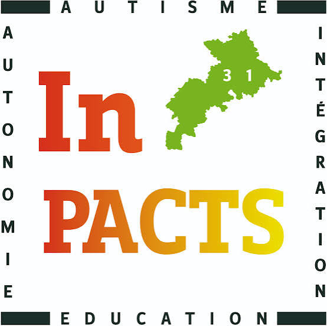

Beyond academics, one cause matters deeply to me on a personal level: raising awareness about disability and championing inclusion — a commitment rooted in my own family and carried forward through the initiatives I take part in.
My Brother Milo
My 15-year-old brother, Milo, is autistic. Growing up alongside him has shaped who I am — every day, I am directly involved in supporting him, understanding his needs, and adapting to the challenges that come with autism.
This close, daily relationship with disability gave me a genuine sensitivity to inclusion long before I encountered it in an academic setting — it is a cause I carry with me, not one I discovered by chance.


Association Inpacts
Inpacts brings together a multidisciplinary team of professionals — educators, therapists and specialized caregivers — who provide tailored education and specialized care for people with autism and other disabilities.
My brother Milo is supported by Inpacts, and seeing this team's dedication up close has deepened my respect for the professionals who work every day to improve the lives of people with disabilities and their families.
Disability Awareness Day
At ENSEEIHT, I helped organize the Disability Awareness Day — an initiative that was particularly meaningful to me given my personal connection to disability through my brother Milo.
I strongly believe such initiatives give students a real opportunity to develop empathy and openness. I am sincerely grateful that ENSEEIHT supports these values and actively promotes awareness of the challenges faced by people with disabilities.